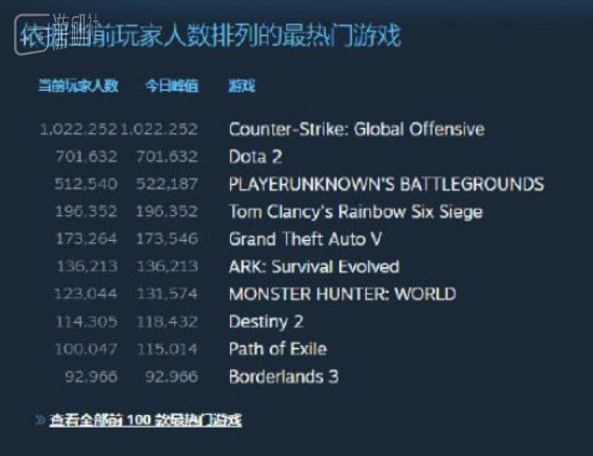

疫情蔓延，拿到逆势红包的在线游戏接下来怎么走？
原文链接 备份链接 _ 春节期间游戏玩家激增，给大部分游戏公司带去了高于往年的流水。要留住玩家，游戏公司面临越来越激烈的存量博弈 _ 文 |《财经》记者 王凤 编辑 | 谢丽容 这个春节，既是游戏人又是投资人的李昊，成功将《魔兽世界》介 …
人们在家里找到了新乐趣。
就在前晚，Steam平台上的同时在线用户再次创下新高，达到了史无前例的2000万人（准确来讲，是20313457）。
最近一段日子，细心的朋友应该已经发现Steam平台上同时在线，以及正在游戏中的用户数量有了明显增长。就在上个月，Steam在线用户刚刚突破了1900万大关，这也是自2018年1月以来，同时在线的最高人数。
在两个月内接连打破在线人数记录，此前罕有发生，虽然目前还没有明确的证据和统计，但不可否认的是，本次新型冠状病毒疫情势必在一定程度上影响了人们的生活习惯，也间接导致了世界范围内“宅经济”的发展。
疫情当前，各国人民都尽量减少了出行计划，对于被迫宅在家里的人们来说，游戏自然成为了最好的消遣形式。在昨日2000万人在线的高峰时段，有近620万玩家正在游戏中，而高居榜首的依旧是大家熟悉的面孔：

除了Steam这个中国玩家熟知的游戏平台。隔壁主机区的Xbox也适时发布了号召大家少出门，一起宅在家里玩游戏的推文：
Xbox的总裁Phil Sprncer也转发了该推特，并激动地表示：“为自己身为游戏行业一员感到自豪，这个行业能在特殊时期给人们安全地提供快乐。
也许玩家们都听到了Xbox官方的号召，同样在前几日，Xbox live的服务器也因为大量用户同时在线而导致瘫痪，不仅多人游戏受到影响，连基本的购买、下载等操作也无法实现：

除了游戏行业，宅在家里的年轻人也间接促使某些大家“喜闻乐见”的影视公司推出了“宅男福利”。
日本著名成人影视公司“SOD”就在全民抗疫的关键时期免费开放了旗下200部制作精良的教学影片，其中也包括了人气很高的“VR系列”，只要你注册成为SOD会员，即可免费观看这些影片直到3月结束。
不知道是为了避免人们因出门而感染病毒，还是想间接降低宅男们的免疫力。成人网站Pornhub也不约而同地为刚刚面临封城的意大利人民准备了一个月的免费会员套餐，以此帮助那些可能按捺不住的单身男女们：
无论是游戏用户的激增还是成人影视的官方福利，都是为了给无法出门的人们带来快乐，就像SOD在该活动上特别强调的：“希望大家保持正确的生活作息下，给每一位用户带来一点笑容就够了。”
原文链接 备份链接 _ 春节期间游戏玩家激增，给大部分游戏公司带去了高于往年的流水。要留住玩家，游戏公司面临越来越激烈的存量博弈 _ 文 |《财经》记者 王凤 编辑 | 谢丽容 这个春节，既是游戏人又是投资人的李昊，成功将《魔兽世界》介 …
原文链接 备份链接 《创新经济战疫计划》，是燃财经在新型肺炎疫情期间推出的特别栏目，关注创新经济企业遇到的新难题、商讨应该采取的新对策，希望能够帮助中小企业一起战胜挑战、把握机会。 作者 | 赵磊 编辑 | 周昶帆 三个微信群，上千条语 …
原文链接 备份链接 主播，玩家，游戏企业，三种不同的角色，在疫情中做了同样的选择。当足不出户成为常态，游戏成了避风港时，这些或多或少遭遇过误解的人群，开始担起了更多的社会责任。 一 主播们大多没感到这期间的直播有什么不同，但作为身披影 …
原文链接 备份链接 洗手有多重要？ 来复习一下标准答案：和戴口罩一样重要，有时可能还更重要。 经历了这么多天密集轰炸式卫生常识再教育，平时再懒的人，现在在洗手这件事上都勤快得不可思议，恨不得把手洗秃噜皮。 如果想加深自我教育，以沉浸式体验 …
原文链接 备份链接 孩子的世界。 自3月2日正式停课至今，日本的中小学生们已经度过了有些难熬的两周。受疫情影响，日本首相安倍晋三早前已宣布过，全国所有高中以下学校将一直停课到四月春假——这意味着无数中小学生的毕业典礼也会因此被跳过。 …